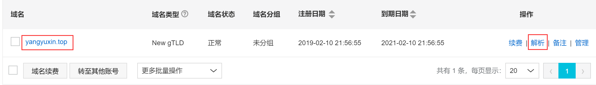

hexo博客绑定自定义域名
1.准备
- 一个已经备案的阿里云域名（国内备案可太麻烦了）
- 一般域名实名认证通过后2-3天，才会恢复解析
2.前置知识
修改阿里云域名解析

主机记录 & 记录值 & 记录类型
主机记录【设置子域名】：指创建子域名时所添加域名前缀
主机记录 说明 www 解析后的域名为www.aliyun.com @ 直接解析主域名 aliyun.com ***** 泛解析，匹配其他所有域名 *.aliyun.com mail 将域名解析为mail.aliyun.com，通常用于解析邮箱服务器 二级域名 如：abc.aliyun.com，填写abc 三级域名 a.www.example.com，填写a.www 手机网站 如：m.aliyun.com，填写m 记录值是指需要将子域名指向哪个解析地址
- 可以输入服务器IP地址，也可以输入域名
记录类型
- A记录：最普通常见的域名解析，是把某一主机名解析到服务器IP
主机记录 类型 记录值 www A 192.168.0.1 - CNAME记录：是主机名到主机名的映射
主机记录 类型 记录值 @ CNAME othername.com - AAAA：用来指定主机名（或域名）对应的IPv6地址。A记录对应的是IPV4地址
- url转发：可以转发到某一个目录下，甚至某一个文件上。
- url转发和cname的主要区别：CNAME记录是不可以转发到某一个目录下，甚至某一个文件上
3.配置阿里云域名解析
无论是A记录、CNAME、URL转发在实际使用时是全部可以设置多条记录的
为了之后项目域名保留，博客使用二级域名scu.yangyuxin.top
- 使用在线域名解析发现原域名对应多个IP，可能做了负载均衡，故记录类型没有使用A类型
记录类型 主机记录 记录值 CNAME scu 博客原域名 获取博客IP地址方法
- cmd窗口中ping 博客原goldcarpenter.github.io
- 网页在线域名解析服务获取
在本地博客
..\source中新建CNAME文件，注意无拓展名，内容输入scu.yangyuxin.top【新域名】使用git shell
1
$ hexo clean && hexo g && hexo d
如此 在github的博客仓库中就会设置自定义域名，已经修改，无需再次修改
大功告成
原文作者: 掘金木匠
原文链接: http://goldcarpenter.github.io/2019/02/18/hexo博客绑定域名/
版权声明: 转载请注明出处(必须保留作者署名及链接)